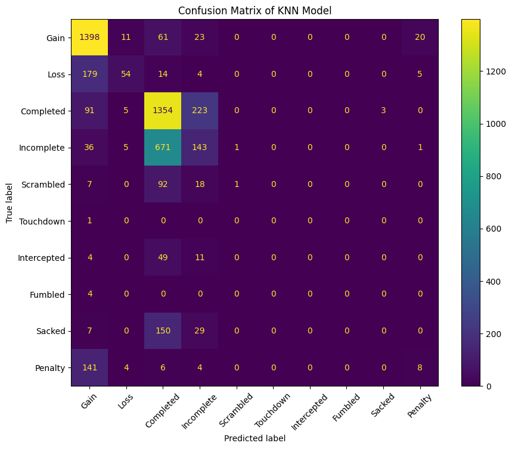
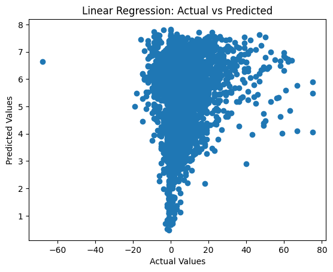

NFL Big Data Bowl 2025
Introduction
I will add to this later. Currently, this is a rough combination of my early notebooks.
Ongoing Thoughts
This is the first time I’m adding to a unified document, it’s December 13th, or about 1 month into my project. As of now, Random Forest definitely seems like the best path forward; however, the intial version certainly overfit. I believe the model overfit because some of the plays columns are the pre/post snap home/away team win probability values. In my next iteration, I’m going to remove those values, and in the future I might even try to recreate them. That being said, there’s a little under one month to go, so I’m going to focus on putting together some kind of deliverable/submission, before I go off the deep end. That said, this page and the website in general are going to be sloppy as I figure things out and slowly improve the organization and UI.
Exploratory Data Analysis and Initial Thoughts
This was written on November 26th, 2024. It was later added to this site on December 13th, 2024. This is a general write up on the project, you can see the full notebooks below. The full repo is available here.
Currently, I’ve made solid progress with my initial exploratory data analysis and project configuration. Here are some quick notes about the setup of my project environment (from IDE to tools/versions). - Using VS Code with the Jupyter, Jinja, YAML, Quarto (for notes/project submissions), and dbt extensions. - DuckDB is my primary database tool (for now), with dbt for the data modeling - Then, I’m using Python and Jupyter Notebooks for the analysis/ML component
The reason I may switch to PostgreSQL for the primary Database is to just gain experience with DuckDB as a DEV environement and Postgres for PROD. Realistically, however, for the scope of this project DuckDB accomplishes everything I need it to.
For the forseeable future, the only side project I’ll be working on is this, so my next few posts will only look at the project progress and my thoughts about the Big Data Bowl, feel free to checkout the GitHub repository where I’m saving my work.
Some notes about my current project progress: - The project folder has a few subdirectories, including nfl_dbt which is the dbt project folder - The raw data came in the form of 13 CSVs from Kaggle. 4 of which are 50mb or less, 9 of which are ~1gb. - I’m using Databricks’ “Medallion Architecture” to guide my data modeling workflow. - I built the initial dbt models, using DuckDB as the DEV target (enabling 4 threads) and loaded the “bronze” schema which contains the 13 raw tables - I aggregated the data into the “silver” schema, which contains an aggregated play data table - I further aggregated the data into the “gold” schema, which provides basic analytic tables - Currently, I completed an initial analysis using an EDA notebook where I looked at using a LinearRegression and KNN to compare pre-snap play data with play outcomes. - I settled on a KNN model, but I’m only seeing about a 61.1% accuracy rate (confusion matrix and explanation below).
So, I’m at a bit of a crossroads, with a few ways forward. It may be simpler (for the initial project/submission) to build a linear regression model that takes pre-snap play data as features, and then looks at yards gained (or loss) for the output. Conversely, if I stick with the KNN model I’ll need to make some changes. The majority of the outputs are either Gain or Completed, which refer to a positive rushing play and a completed pass, respectively. The issue here, the model overwhelmingly predicts those values, but fails to accurately predict things like Touchdowns, Sacks, or Interceptions.
So, I may need to limit possible play outcomes, or at least combine some categories (i.e. Turnover for Fumble + Interception). Or, add some more presnap data, such as down and distance (I currently only use starting yard line, along with categorical data). If you made it this far, thank you! Below is the confusion matrix output from my current KNN model. I’ll add some hashtags at the end as an experiment too, because I’m not sure if that will help with post discoverability and/or integrate with Bluesky feeds.
KNN Classifier Notebook (First Model)
# Import dependencies
import duckdb
import numpy as np
import pandas as pd
import seaborn as sns
import matplotlib.pyplot as plt
import matplotlib.patches as mpatches
from sklearn.neighbors import KNeighborsClassifier
from sklearn.model_selection import train_test_split# Open the connection to the persistent database
con = duckdb.connect(".config/nfl.duckdb")
con.close()# Create the initial dataframe object with DuckDB
df = con.sql("""
SELECT *
FROM gold.plays_numeric
""").df()
df.head()| gameId | playId | possessionTeam | yardlineNumber | offenseFormation | receiverAlignment | playType | defensiveFormation | pff_manZone | yardsGained | playOutcome | |
|---|---|---|---|---|---|---|---|---|---|---|---|
| 0 | 2022102302 | 2655 | CIN | 21 | 3 | 8 | 2 | 6 | 2 | 9 | 3 |
| 1 | 2022091809 | 3698 | CIN | 8 | 3 | 8 | 2 | 13 | 2 | 4 | 3 |
| 2 | 2022103004 | 3146 | HOU | 20 | 6 | 5 | 2 | 13 | 2 | 6 | 3 |
| 3 | 2022110610 | 348 | KC | 23 | 6 | 5 | 2 | 13 | 2 | 4 | 3 |
| 4 | 2022102700 | 2799 | BAL | 27 | 4 | 7 | 1 | 3 | 1 | -1 | 2 |
# Split the table into features and target
X = con.sql("""
SELECT yardlineNumber, offenseFormation, receiverAlignment, playType, defensiveFormation, pff_manZone
FROM gold.plays_numeric
""").df()
y = np.array(con.sql("""
SELECT playOutcome
FROM gold.plays_numeric
""").df()).ravel()
print(X.shape, y.shape)(16124, 6) (16124,)# Instantiate the model and split the datasets into training/testing
knn = KNeighborsClassifier(n_neighbors=7)
X_train, X_val, y_train, y_val = train_test_split(X, y, train_size=0.7, random_state=123)# Fit the model
knn.fit(X_train, y_train)KNeighborsClassifier(n_neighbors=7)In a Jupyter environment, please rerun this cell to show the HTML representation or trust the notebook.
On GitHub, the HTML representation is unable to render, please try loading this page with nbviewer.org.
KNeighborsClassifier(n_neighbors=7)
# Basic KNN Performance Metrics
y_pred = knn.predict(X_val)
print(knn.score(X_val, y_val))0.6114096734187681# Datacamp Model performance Loop
# Create neighbors
neighbors = np.arange(1, 13)
train_accuracies = {}
test_accuracies = {}
for neighbor in neighbors:
# Set up a KNN Classifier
knn = KNeighborsClassifier(n_neighbors=neighbor)
# Fit the model
knn.fit(X_train, y_train)
# Compute accuracy
train_accuracies[neighbor] = knn.score(X_train, y_train)
test_accuracies[neighbor] = knn.score(X_val, y_val)
print(neighbors, '\n', train_accuracies, '\n', test_accuracies)# Visualize model accuracy with various neighbors
# Add a title
plt.title("KNN: Varying Number of Neighbors")
# Plot training accuracies
plt.plot(neighbors, train_accuracies.values(), label="Training Accuracy")
# Plot test accuracies
plt.plot(neighbors, test_accuracies.values(), label="Testing Accuracy")
plt.legend()
plt.xlabel("Number of Neighbors")
plt.ylabel("Accuracy")
# Display the plot
plt.show()# Map the original target variables to the KNN outputs
play_outcome_map = con.sql("""
SELECT
CASE
WHEN playOutcome = 1 THEN 'Gain'
WHEN playOutcome = 2 THEN 'Loss'
WHEN playOutcome = 3 THEN 'Completed'
WHEN playOutcome = 4 THEN 'Incomplete'
WHEN playOutcome = 5 THEN 'Scrambled'
WHEN playOutcome = 6 THEN 'Touchdown'
WHEN playOutcome = 7 THEN 'Intercepted'
WHEN playOutcome = 8 THEN 'Fumbled'
WHEN playOutcome = 9 THEN 'Sacked'
WHEN playOutcome = 0 THEN 'Penalty'
ELSE 'Unknown' -- Optional, in case there are values not matching any condition
END AS playOutcome
FROM gold.plays_numeric
""").df()['playOutcome'].tolist()
play_outcome_map = np.unique(play_outcome_map).tolist()# Create a dictionary to map playOutcome values to corresponding labels
play_outcome_dict = {i: play_outcome_map[i] for i in range(len(play_outcome_map))}
# Generate a colormap for the string labels (use 'viridis' colormap)
colors = plt.cm.viridis(np.linspace(0, 1, len(play_outcome_map)))
play_colors = dict(zip(range(len(play_outcome_map)), colors))
# Create legend patches for each class label
legend_patches = [mpatches.Patch(color=play_colors[i], label=play_outcome_map[i]) for i in range(len(play_outcome_map))]
# Assuming `y_pred` is a list of predictions, map numeric predictions to string labels
pred_labels = [play_outcome_dict[val] for val in y_pred]# Attempting to conduct sensitivity analysis for feature importance
for feature in range(6):
plt.figure(figsize=(10, 6))
plt.scatter(X_val.iloc[:, feature], y_pred, c=[play_colors[val] for val in y_pred], cmap='viridis', edgecolor='k')
plt.xlabel(f"Feature {feature + 1}")
plt.ylabel("Predicted Class")
plt.yticks(range(len(play_outcome_map)), play_outcome_map)
plt.title(f"Predictions by Feature {feature + 1}")
plt.legend(handles = legend_patches, title="Actual Class", bbox_to_anchor=(1.05, 1), loc = 'upper left')
plt.tight_layout
plt.show()# Your play_outcome_dict with correct mapping
play_outcome_dict = {
1: 'Gain',
2: 'Loss',
3: 'Completed',
4: 'Incomplete',
5: 'Scrambled',
6: 'Touchdown',
7: 'Intercepted',
8: 'Fumbled',
9: 'Sacked',
0: 'Penalty'
}
# Map the y_pred values to the corresponding labels
pred_labels = [play_outcome_dict[val] for val in y_pred]
# Define the colormap based on the labels
play_colors = plt.cm.viridis(np.linspace(0, 1, len(play_outcome_dict)))
# Combine your features (X_val) and the predictions (y_pred) into a single DataFrame
df_features = X_val.copy()
df_features['Predicted Class'] = [play_outcome_dict[key] for key in y_pred]
# Create a pairplot to visualize pairwise relationships between all features
sns.pairplot(df_features, hue='Predicted Class', palette=dict(zip(play_outcome_dict.values(), play_colors)), markers='o')
# Customize the plot
plt.suptitle('Pairplot of Features Colored by Predicted Class', y=1.02)
plt.legend(handles = legend_patches, title="Actual Class", bbox_to_anchor=(1.05, 1), loc = 'upper left')
plt.tight_layout()
plt.show()from sklearn.metrics import confusion_matrix, ConfusionMatrixDisplay
# Assuming y_true contains the true labels and y_pred contains the predicted labels
# Map numerical values to their respective class labels
y_true_labels = [play_outcome_dict[val] for val in y_val] # Replace y_true with your actual true labels
y_pred_labels = [play_outcome_dict[val] for val in y_pred]
# Generate the confusion matrix
cm = confusion_matrix(y_true_labels, y_pred_labels, labels=list(play_outcome_dict.values()))
# Visualize the confusion matrix
fig, ax = plt.subplots(figsize=(10, 8))
disp = ConfusionMatrixDisplay(confusion_matrix=cm, display_labels=list(play_outcome_dict.values()))
disp.plot(cmap='viridis', ax=ax, xticks_rotation=45)
# Customize the plot
plt.title("Confusion Matrix of KNN Model")
plt.show()
Linear Regression Notebook (Second Model)
import duckdb
import numpy as np
import pandas as pd
import matplotlib.pyplot as plt
from sklearn.preprocessing import StandardScaler
from sklearn.linear_model import LinearRegression, Ridge
from sklearn.model_selection import train_test_split, KFold, cross_val_score
from sklearn.metrics import mean_squared_error, r2_score# Open the DuckDB connection, to the persistent database
con = duckdb.connect(".config/nfl.duckdb")
con.close()# Test converting the play outcomes to just yards gained or lost
con.sql("""
SELECT *
FROM gold.plays_numeric
""")# Can still utilize plays_numeric, just won't use the categorical outcomes as the target
X = con.sql("""
SELECT yardlineNumber, offenseFormation, receiverAlignment, playType, defensiveFormation, pff_manZone
FROM gold.plays_numeric
""").df()
y = con.sql("""
SELECT yardsGained
FROM gold.plays_numeric
""").df()# Train test split
# May need to come back and apply a Standard Scaler later
linreg = LinearRegression()
scaler = StandardScaler()
X_train, X_val, y_train, y_val = train_test_split(X, y, train_size = 0.7, random_state = 123)
X_train_scaled = scaler.fit_transform(X_train)
X_val_scaled = scaler.transform(X_val)# Fit the model
linreg.fit(X_train_scaled, y_train)LinearRegression()In a Jupyter environment, please rerun this cell to show the HTML representation or trust the notebook.
On GitHub, the HTML representation is unable to render, please try loading this page with nbviewer.org.
LinearRegression()
# Begin testing and scoring
y_pred = linreg.predict(X_val_scaled)
mse = mean_squared_error(y_val, y_pred)
r2 = r2_score(y_val, y_pred)
print(f"MSE: {mse}")
print(f"R2 Score: {r2}")MSE: 80.63310622289697
R2 Score: 0.02277208083008464plt.scatter(y_val, y_pred)
plt.xlabel("Actual Values")
plt.ylabel("Predicted Values")
plt.title("Linear Regression: Actual vs Predicted")
plt.show()
coefficients = linreg.coef_
print(f"Coefficients: {coefficients}")
Coefficients: [[ 0.05041481 0.32550574 0.04088819 1.77381568 -0.0198335 -0.16104852]]ridge = Ridge(alpha=1.0)
ridge.fit(X_train_scaled, y_train)
y_pred_ridge = ridge.predict(X_val_scaled)
print(f"Ridge MSE: {mean_squared_error(y_val, y_pred_ridge)}")Ridge MSE: 80.63311884052399Random Forest Notebook (Third Model)
import duckdb
import tqdm
import numpy as np
import pandas as pd
import matplotlib.pyplot as plt
from sklearn.feature_selection import RFE
from sklearn.ensemble import RandomForestRegressor
from sklearn.model_selection import train_test_split, GridSearchCV, cross_val_score
from sklearn.metrics import mean_squared_error, r2_score# Create the database connection
con = duckdb.connect("nfl.duckdb")
#con.close()# Creating dataframes with DuckDB, plays and player_play both have 50 columns, more ideal for a broad random forest
X = con.sql("""
SELECT quarter, down, yardsToGo, yardlineNumber, preSnapHomeScore, preSnapVisitorScore,
playNullifiedByPenalty, absoluteYardlineNumber, preSnapHomeTeamWinProbability, preSnapVisitorTeamWinProbability, expectedPoints,
passResult_complete, passResult_incomplete, passResult_sack, passResult_interception, passResult_scramble, passLength, targetX, targetY,
playAction, passTippedAtLine, unblockedPressure, qbSpike, qbKneel, qbSneak, penaltyYards, prePenaltyYardsGained,
homeTeamWinProbabilityAdded, visitorTeamWinProbilityAdded, expectedPointsAdded, isDropback, timeToThrow, timeInTackleBox, timeToSack,
dropbackDistance, pff_runPassOption, playClockAtSnap, pff_manZone, pff_runConceptPrimary_num, pff_passCoverage_num, pff_runConceptSecondary_num
FROM silver.plays_rf
""").df()
y = np.array(con.sql("""
SELECT yardsGained
FROM silver.plays_rf
""").df()).ravel()# Having issues with NA values, the below code does a simple count using pandas, will then go back and change the query
# As of writing this, the issue is solved; however, the dbt model for this is far from efficient
na_counts = (X == 'NA').sum()
# Optionally, filter only columns with 'NA' values for easier review
na_counts_filtered = na_counts[na_counts > 0]
print(na_counts_filtered, "\n", X.shape, "\n", y.shape) # playClockAtSnap has only 1 NA value, will just drop that rowSeries([], dtype: int64)
(16124, 41)
(16124,)# Instantiate the model and split the data
rf = RandomForestRegressor(warm_start=True)
selector = RFE(rf, n_features_to_select=10, step=1)
X_selected = selector.fit_transform(X, y)# Begin Interpretation, first with feature importance
selected_features = X.columns[selector.support_]
print(selected_features)Index(['yardlineNumber', 'absoluteYardlineNumber',
'preSnapHomeTeamWinProbability', 'expectedPoints',
'passResult_scramble', 'penaltyYards', 'prePenaltyYardsGained',
'homeTeamWinProbabilityAdded', 'visitorTeamWinProbilityAdded',
'expectedPointsAdded'],
dtype='object')# Split the data
X_train, X_test, y_train, y_test = train_test_split(X_selected, y, test_size=0.2, random_state=42)
# Train the model
rf.fit(X_train, y_train)
# Make predictions
y_pred = rf.predict(X_test)
# Calculate scores
mse = mean_squared_error(y_test, y_pred)
r2 = r2_score(y_test, y_pred)
print(f"Mean Squared Error: {mse}")
print(f"R^2 Score: {r2}")Mean Squared Error: 1.7769936744186046
R^2 Score: 0.9766614590863065# Continue with the GridSearch
param_grid = {
'n_estimators': [100, 200, 300],
'max_depth': [None, 10, 20, 30],
'min_samples_split': [2, 5, 10],
'min_samples_leaf': [1, 2, 4],
}
grid_search = GridSearchCV(estimator=rf, param_grid=param_grid, cv=5, scoring='neg_mean_squared_error', n_jobs=4)
grid_search.fit(X_train, y_train)
best_rf = grid_search.best_estimator_
# Wrap a progress bar for longer Grid Searches
"""with tqdm(total=len(param_grid['n_estimators']) * len(param_grid['max_depth']) * len(param_grid['min_samples_split']) * len(param_grid['min_samples_leaf']), desc="GridSearch Progress") as pbar:
def callback(*args, **kwargs):
pbar.update(1)
# Add the callback to the grid search
grid_search.fit(X, y, callback=callback)"""
print(grid_search.best_params_){'max_depth': 20, 'min_samples_leaf': 1, 'min_samples_split': 2, 'n_estimators': 100}# Continue with the Cross Validation Score
cv_scores = cross_val_score(rf, X_selected, y, cv=5, scoring='neg_mean_squared_error')
print(f"Cross-validated MSE: {-cv_scores.mean()}")Cross-validated MSE: 1.9303851017196607